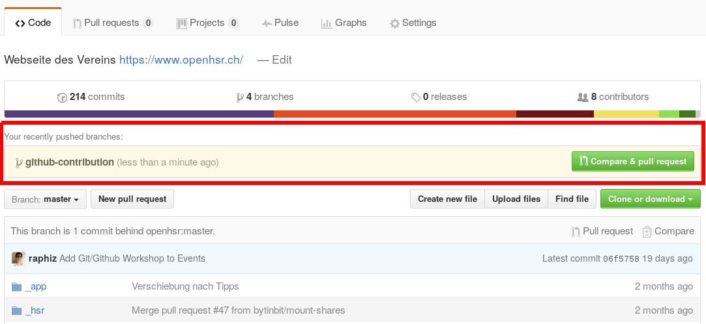

Bei einer Contribution in ein öffentliches Github Projekt, gibt es einige Punkte zu beachten. Diese möchten wir die hier zeigen:
Projektwahl
Wähle ein Projekt, dass dein Interesse geweckt hat. Bist du noch auf der Suche, würden sich viele interessante Open Source Projekte über deine Mithilfe freuen.
- Durchsuche zuerst den Issue Tracker, ob dein Problem/Anforderung/Erweiterung bereits existiert oder sogar bereits daran gearbeitet wird.
- Suche nach Labels wie
help wanted,easy fixoderup for grabs - Erstelle ein neues Issue, damit die Maintainer des Repository von deinem Vorhaben Bescheid wissen.
Kläre vor jeder Contribution folgende Dinge ab:
- Prüfe die Software Lizenz
- Lebt das Projekt noch, oder arbeitest du für die Tonne?
Lese die Anleitungen und Richtlinien für eine Contribution in dem Projekt
- Typischerweise gibt es Dokumente (
CONTRIBUTING.md,CONTRIBUTE.md,CONVENTIONS.mdoder ein Abschnitt in derREADME.md), wo die Maintainer beschreiben wie man Vorgehen möchte. - Die Richtlinien sollten in jedem Fall beachtet werden!
- Typischerweise gibt es Dokumente (
Forken und Entwickeln
Erstelle einen Fork des Projekts
Klone das geforkte Projekt auf dein Notebook
$ git clone <fork_repo_url> . $ cd <fork_repo_dir>Erstelle ein
upstreamRepository welches auf das orginal Repository der Maintainer zeigt:$ git remote add upstream <original_repo_url> .Erstelle einen neuen Branch um deine Änderungen zu entwickeln:
$ git checkout -b <branch_name>Achte beim Umsetzen deiner Anpassung auf folgende Punkte:
- Lege deinen Fokus auf genau eine Funktion
- Mache sinnvolle Commits mit guten Beschreibungen
- Entwickle weitere Features in separaten Branches
- Hole die Änderungen vom
upstreamregelmässig in deinen Fork. Wie dies funktioniert, kannst du in folgendem Beitrag nachlesen. Ein Sync sollte mindestens vor jedempushdurchgeführt werden.
Bevor der finale Pull Request erstellt wird, sollten folgende Punkte geprüft werden:
- Laufen alle Tests durch?
- Müssen eigene Tests geschrieben werden?
- Funktioniert noch alles wie erwartet und sind alle Rechtschreibfehler beseitigt?
Pushe deine Änderungen in deinen Fork
$ git push origin <branch-name>
{kind=link}
Pull Request
Öffne das geforkte Repository in deinem Browser. Über den grossen, grünen Button kannst du nun einen Pull Request erstellen. 
Füge dem Pull Request eine ausführliche Beschreibung mit Referenzen und Beweggründen hinzu.
Warte auf Feedback, ob dein Pull Request noch einigen Anpassungen bedarf. Allfällige Änderungen werden wieder in deinem Fork entwickelt.
- Hole dazu wieder den aktuellen Stand vom
upstreamRepository des Maintainer. Wie dies funktioniert wird wie bereits erwähnt, in folgendem Beitrag beschrieben. - Nachdem die Anpassungen gemacht sind, können die Änderungen wieder in den Fork gepusht werden. Der Pull Request wird automatisch mit den neuen Commits aktualisiert.
$ git push orign <branch_name>
- Hole dazu wieder den aktuellen Stand vom
Gratuliere, du konntest deine erste Contribution erfolgreich anbringen. Es empfiehlt sich nun, seine Fork noch aufzuräumen:
$ git branch -D <branch_name> $ git push origin --delete <branch_name>
{kind=link}